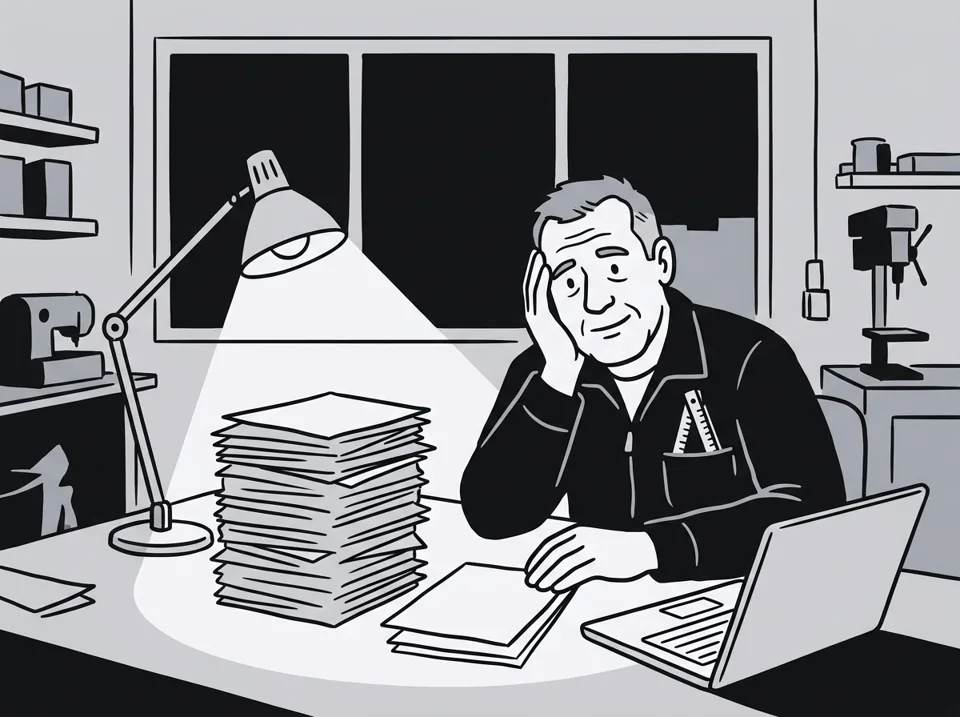
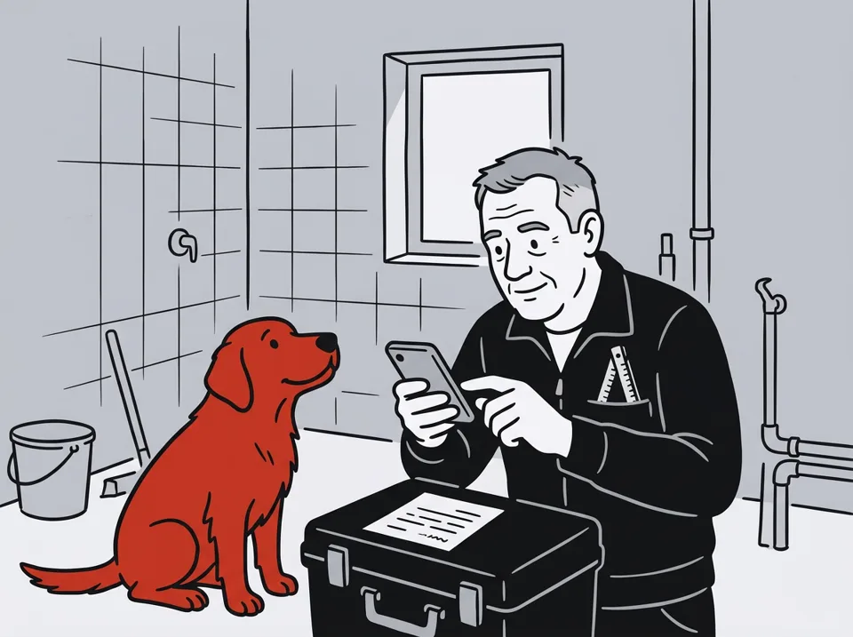
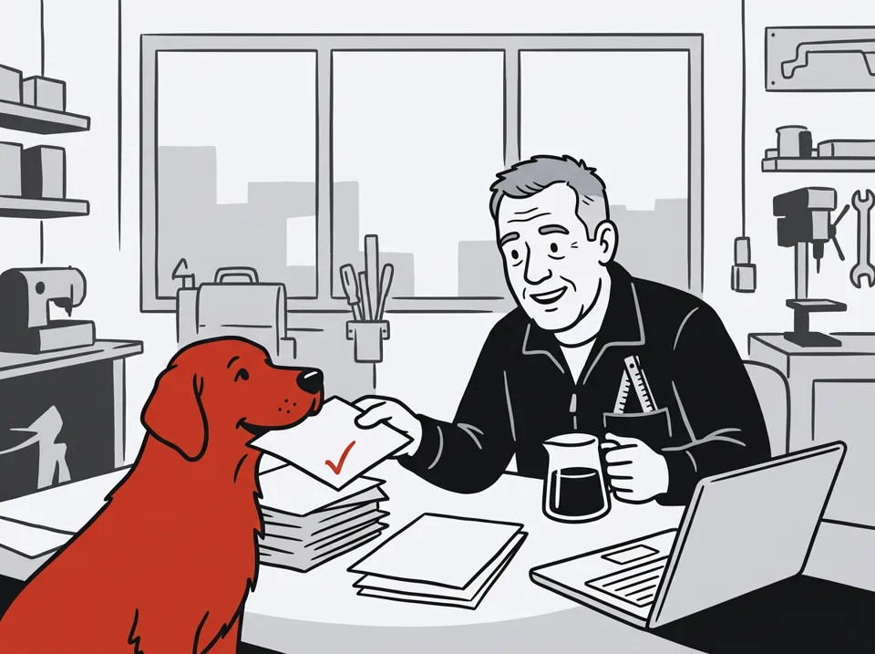
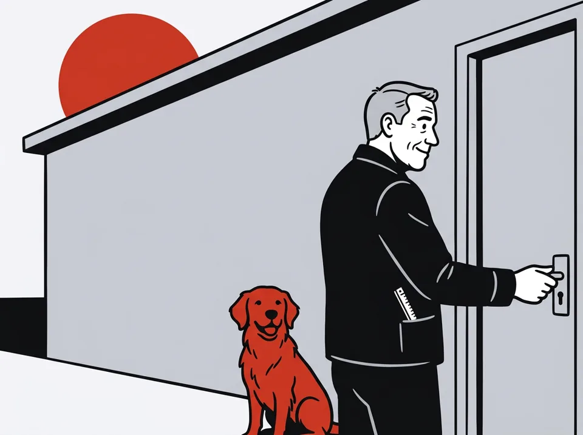

Handwerksbetrieb
Feierabend statt Büroabend.
Den ganzen Tag Baustelle. Abends wartet das Büro.




Ein Satz, und die Arbeit macht Gernbei
- „Ich hab dir das Foto vom Regiezettel hingelegt. Mach den Regiebericht für Berger draus.“Der Bericht ist fertig.in unter 3 Minuten
- „Schreib ein Angebot für Herrn Engelhardt, Wallbox 11 kW, Reihenendhaus Rosenstraße 6, mit Anmeldung beim Netzbetreiber.“Der Entwurf steht, das Material aus Ihrer Preisliste. Die Stunden setzen Sie.in unter 4 Minuten
- „Was ist eigentlich mit dem Angebot Bad Müller?“Das Nachfassen liegt bereit.in unter 1 Minute
So lief der Tag im Einzelnen
Morgens im Transporter, ins Handy gesprochen
„Was steht heute an?“
- Herr Huber: ihm heute einen Termin zum Nachsehen nennen
- Frau Berger: Wartung der Gastherme, für heute zugesagt
- Bis 14.11.: bei Müller nachfassen, Angebot für Wolf
Auf der Baustelle, am Handy
„Ich hab dir das Foto vom Regiezettel hingelegt. Mach den Regiebericht für Berger draus.“
- Regiebericht R001 für Berger liegt unter Dokumente
- Peter 3,5 Stunden, Jonas 3 Stunden, Material übernommen
- Bitte prüfen: die Zahlen sind vom Zettel gelesen
16 Uhr, ins Handy gesprochen
„Huber hat angerufen, wann wir kommen. Die Heizung tropft wieder.“
- Anruf von Herrn Huber festgehalten
- Letzter Einsatz bei Huber: 12.09., Ventil getauscht
- Aufgefallen: der Rückruf war bis gestern zugesagt
Abends im Büro, am Rechner
„Schreib ein Angebot für Herrn Engelhardt, Wallbox 11 kW, Reihenendhaus Rosenstraße 6, mit Anmeldung beim Netzbetreiber.“
- Angebot A-26-0250 als Entwurf, als Word und PDF
- Material 1.130,30 € netto aus Ihrer Preisliste, Auftrag Engelhardt angelegt
- Offen: Stunden der Positionen 6 bis 9 und Terminvorschläge
Am Rechner
„Mach ein Angebot für den Wärmepumpen-Anschluss und den neuen Zählerschrank bei Familie Sattler.“
- Angebot A-26-0251 als Entwurf, als Word und PDF
- Neuer Auftrag Sattler angelegt
- Hausanschlusssicherung, Anschrift, Stunden und zwei Leitungspreise fehlen
Am Rechner
„Mach aus der Mängelliste einen Bericht für Frau Reichart, eine Seite, nach Dringlichkeit sortiert.“
- Mängelbericht als Word und PDF, eine Seite
- 14 Mängel: 2 sofort, 5 binnen 4 Wochen, 7 bei Gelegenheit
- Preise je Mangel und Termin der Nachprüfung fehlen noch
Kurz vor Feierabend, am Rechner
„Was ist eigentlich mit dem Angebot Bad Müller?“
- 9.480 € brutto, seit dem 17.10. bei Frau Müller
- Das Nachfassschreiben liegt fertig im Entwurf
- Aufgefallen: die Postleitzahl von Frau Müller fehlt noch
Erfundene Betriebe, echte Antworten von Gernbei, gekürzt.